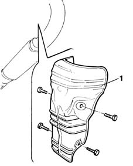

1076A74 heat shield for exhaust pipe attachment to manifold - r r
- Path
- Procedures > 10 ENGINE UNIT > 1076 EXHAUST PIPES AND SILENCERS > 1076A exhaust pipe fastenings and protections > 1076A74 heat shield for exhaust pipe attachment to manifold - r r
- Kind
- repair procedure (removal / refitting; the operation number is the code)
- Applies to
- engines: 1.6 16v; all production periods
- Interactive page
- https://sloeber94.github.io/elrnDB-fMltpl/en/#/2891288
Applies to: engines: 1.6 16v; all production periods
 Removing
Removing
 Refitting
RefittingPlace the car on a ramp.
Raise the car.
1. Unscrew the bolts securing the heat shield to the underlying brackets.
2. Remove the heat shield from the lower part of the vehicle.

Applies to: engines: 1.6 16v; all production periods
Refitting
RemovingCheck the condition of the heat shield.
Fit to the exhaust pipe brackets.
Tighten the retaining bolts to torque.
 | Fastening | Component | Ø | Value (daNm) |
|---|---|---|---|---|
- | Bolt | DISCHARGE PIPE TO MANIFOLD HEAT SHIELD | M6 | 0.8 |
Lower the vehicle.
Remove the vehicle from the ramp.
Topics that link to this page (7)
- 1004B10 power unit with manual gearbox - r + r
- 1072C10 exhaust manifold - r + r and replace seal
- 1076B12 exhaust pipe assembly r+r emission control versions
- 1076B50 exhaust pipe attachment to engine - r + r
- 1076B58 exhaust pipe attachment to engine seal/s - replace
- 4130A10 power steering box - r+r - check tow-in if necessary separately - includes bleeding
- 4130A13 POWER ASSISTED STEERING BOX - R.R. - If necessary. check wheel toe in separately - Includes. bleeding air - on right hand drive versions